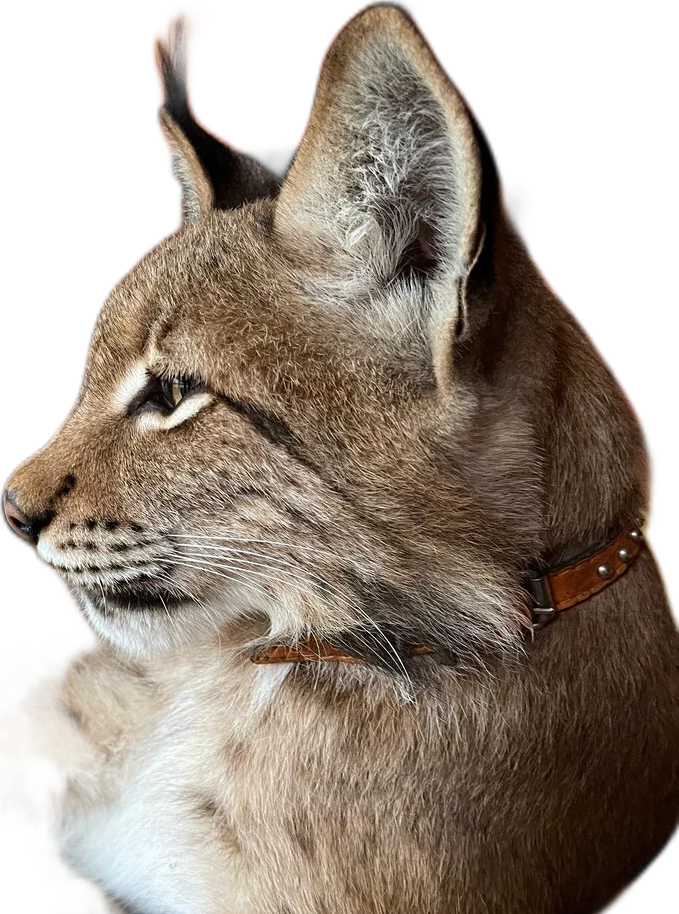
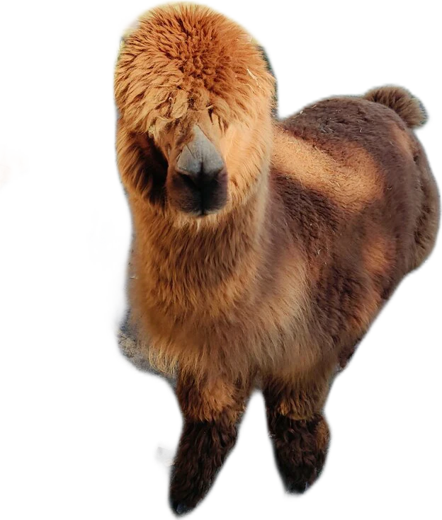
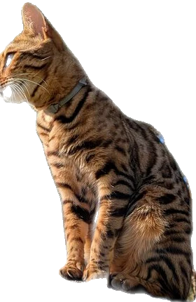

Альпаки
Подходят сами и ждут морковку.

 Рысь Велес
Рысь ВелесРысь Велес — ручная, и её можно погладить. В «НатЮрлих» почти ко всем питомцам заходят в вольер — вместе с работником, который расскажет историю зверя и подскажет, как себя вести.

Территория небольшая, но зверей много — и почти всех можно погладить и покормить под присмотром.
Подходят сами и ждут морковку.

Выглядывают из домика с сеном.

Любят только мясо и рыбку.

Детёныш альпаки не отходит от мамы.

Хвосты не рубим — это порода курильский бобтейл!
Ручная и ласковая — гладить можно с разрешения.
А ещё: тигрица, медведица, еноты, верблюд, дикобразы, павлины, ослики и носуха
Кого и чем кормить, подробно расписано в Instagram @agrousadba_naturlich — загляните перед поездкой.


Работник проведёт по вольерам, расскажет про каждого питомца и покажет, кого можно погладить. После прогулки гостей угощают чаем со сладостями в беседке с очагом.
Вольеры чистые, запаха нет — это пишут почти в каждом отзыве.
Рядом с зоосадом — уютный дом на 10 спальных мест со всеми удобствами. А за забором живут олени.
Спросить про даты
Впечатление, что приехал к родственникам на ферму с экзотическими животными. Там не просто содержат зверей, чтобы заработать. Там их любят.Наталья К.
Дети были просто очарованы! Гиды рассказывают много интересного о питомцах. После экскурсии всех напоили чаем со сладостями в беседке с очагом.Сергей Б.
Много экзотических животных, которых можно погладить и сфотографироваться с ними. Рысь Велес — вообще отдельная любовь.Оксана М.